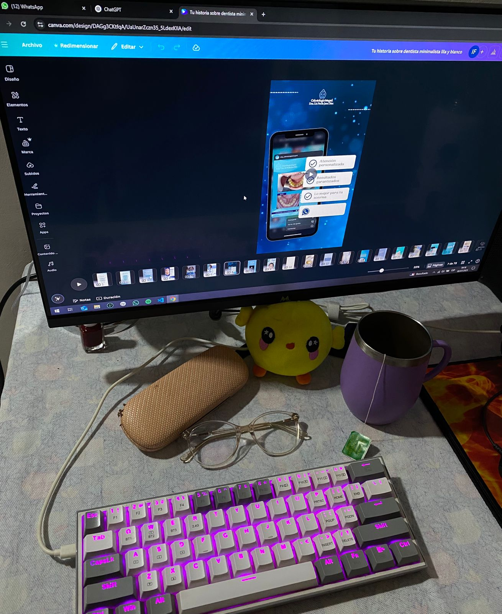

Hola! Me presento👋
Sobre mí
Mi nombre es Sara, vivo en Capiatá, me considero una persona empática y detallista, disfruto tener todo bien organizado (¡sí, amo anotar! 📝).
Actualmente trabajo de forma remota iniciándome como Tester Junior para la empresa MT, y también colaboro en la edición y creación de contenido digital.
Sigo explorando el mundo del testing y la inteligencia artificial, dos áreas que despiertan mucho mi curiosidad.
En el 2022 obtuve mi título de Licenciatura en Análisis de Sistemas. Mi tesis fue el desarrollo de un sistema desktop de gestión académica, operativa y documental para una institución educativa, programado en Java con base de datos MySQL utilizando SQLyog. Disfruté especialmente trabajar con diagramas de secuencia en StarUML, ya que me ayudaban a visualizar los procesos de forma clara y ordenada.
Experiencia
2024 - 2025
Desde junio de 2024 edito imágenes para la cuenta de Instagram de Mastertech, aplicando conocimientos de diseño visual, Canva e inteligencia artificial.
Actualmente, colaboro en la ejecución de pruebas funcionales de API REST (métodos GET, POST y PUT) en un entorno WooCommerce, utilizando Postman para la validación de endpoints y Jira para el registro y seguimiento de incidencias.
Esta experiencia me permite fortalecer mis habilidades en análisis, detección de errores y documentación dentro del proceso QA.
2023
Trabajé en el área de Recursos Humanos de una fábrica, realizando tareas como:
• Organización de legajos
• Carga de datos en el sistema IPS REI 2.0 y MTESS.
• Control de asistencia
• Registro y actualización de notas de crédito en el sistema interno de la empresa.
• Actualización y mantenimiento básico de equipos con sistema operativo Windows.
Fue una experiencia muy valiosa, donde conocí a personas muy amables!
💻 Mi espacio de trabajo
Mi rincón fav.
Ediciones en Canva
Diseños para una clínica odontológica, adaptados para publicaciones en redes sociales.
Diseño para historia
Diseño creado para anunciar el inicio de atención al público en redes sociales. Utilicé un estilo limpio y profesional, con colores suaves para transmitir confianza y cercanía.
Post informativo.
El objetivo es comunicar de manera clara y visual los servicios de la clínica.
Diseños para una tienda de informática, adaptados para publicaciones en redes sociales.
Prácticas de Testing
Estas prácticas fueron realizadas como parte de un curso de testing. Incluyen ejemplos de historias de usuario, casos de prueba y reportes de bugs, documentados de forma sencilla para aplicar los conceptos aprendidos.
Ejemplos en Mastertech
Ejemplos representativos de mi trabajo en MT, mostrando cómo aplico metodologías de QA:
1 - Planificación y ejecución de pruebas funcionales de API REST (GET, POST, PUT, PATCH), con documentación detallada de los resultados.
2 - Detección y documentación de un bug del sitio.


Contacto
Haz clic en el ícono
saraparedesg27@gmail.com
Haz clic en el ícono
Certificados.

API Testing con POSTMAN: Masterclass 2025.

Software Testing desde cero: MasterClass.
Marketing Operativo y Estratégico.
Operador Microsoft Word 2016.
Lenguaje Unificado del Modelado (UML).
Power BI (nivel principiante).
IA Generativa: Desafíos y oportunidades.
Habilidades Blandas.
SQL Server.
Sobre mi tesis
Mi tesis consistió en el desarrollo de un módulo académico escolar diseñado para facilitar la gestión y organización de información educativa. El sistema fue programado en Java utilizando el IDE NetBeans,
y se integró con una base de datos MySQL gestionada mediante SQLyog para el almacenamiento eficiente de los datos.
Adjunto un manual de usuario que incluye capturas de pantalla para facilitar la correcta utilización del módulo.
Descargar manual de usuario (PDF)